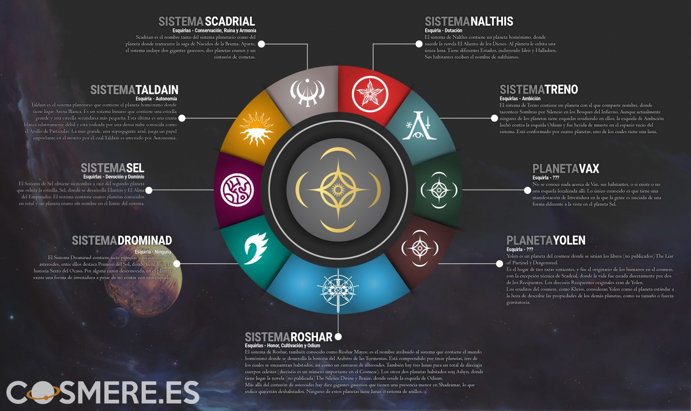

Planetas del Cosmere
Hay actualmente doce planetas conocidos en el Cosmere. Se sabe que tres de estos planetas (Ashyn, Braize y Roshar) están en el mismo sistema solar. Dos de ellos, Treno y Primero del Sol, son “Mundos de Esquirla menores”. Aquí os dejamos un esquema que puede servir para una referencia rápida de los mundos que hay en el Cosmere y algunas de sus características. Tened en cuenta que la tabla muestra las Esquirlas que hay en la actualidad en ese planeta, es posible que haya habido otras presentes en algún punto del tiempo.
 Nota: El último planeta conocido Obrodai no esta añadido en este esquema de momento por falta de datos, es mencionado en Juramentada y solo sabemos que es controlado por un avatar de la Esquirla Autonomía.Planeta Yolen
Yolen es un planeta del cosmere donde se sitúan los libros (aún sin publicar) The Liar of Partinel y Dragonsteel. Es el hogar de tres razas sintientes y fue el originario de los humanos en el Cosmere, con la excepción técnica de Scadrial, donde la vida fue creada directamente por dos de los Recipientes. Los 16 Recipientes originales eran de Yolen. Los eruditos del Cosmere, como Khriss, consideran Yolen como el planeta estándar a la hora de describir las propiedades de los demás planetas, como su tamaño o fuerza gravitatoria.
Sistema Roshar
El sistema de Roshar, (también conocido como Gran Roshar), es el nombre que recibe el sistema planetario que contiene el mundo homónimo. Comprende trece planetas, un cinturón de asteroides y tres lunas sumando un total de dieciséis cuerpos orbitales. De estos trece planetas, tres son rocosos y los diez restantes son gigantes gaseosos, divididos por el mencionado cinturón de asteroides. Además también es el nombre del supercontinente en el que tienen lugar los principales eventos de la saga El Archivo de las Tormentas. La gente de Roshar se llama Rosharans.
Sistema Scadrial:
Scadrial se encuentra en un sistema solar prácticamente vacío que a lo largo de su existencia ha sufrido enormes cambios derivados de la influencia de sus Esquirlas. Scadrial es un planeta biesquirlado con una multitud de rasgos exclusivos. Es uno de los dos únicos lugares en todo el Cosmere donde la humanidad no antecede a la llegada de sus Esquirlas (Ruina y Conservación). Ellos se basaron en los humanos de Yolen (mundo natal de todos los Portadores originales y Hoid) como modelo para crear la vida en Scadrial. En consecuencia, la flora y la fauna del planeta son muy parecidas a las que pueden hallarse en Yolen.
Sistema Nalthis:
El sistema Nalthis contiene un planeta homónimo, donde sucede la novela El Aliento de los Dioses. Al planeta el orbita una única luna. Tiene diferentes Estados, incluyendo Idris y Hallandren. Sus habitantes reciben el nombre de Nalthianos.
Sistema Treno
El Sistema Treno contiene un planeta con elq ue comparte nombre, donde acontece Sombras por Silencio en los Bosques del Infierno. Aunque actualmente ninguno de los planetas tiene esquirlas residiendo en ellos, la esquirla de Ambición luchó contra Odium y fue herida de muerte en el espacio vacío del sistema. Está conformado por 4 planetas, uno de los cuales tiene una luna.
Sistema Sel
El sistema de Sel recibe su nombre a raíz del segundo planeta que orbita su estrella, Sel, donde se desarrollan los libros Elantris y El Alma del Emperador. El sistema tiene 4 planetas conocidos en total y un planeta enano sin nombre al limite del sistema.
Planeta Vax
No se conoce nada acerca de Vax, sus habitantes o si existe o no una esquirla allí. Lo único conocido es que tiene una manifestación de Investidura, en la que la gente es iniciada de una forma diferente a la vista en el planeta Sel.
Sistema Drominad
El Sistema Drominad contiene 7 planetas, entre llos destaca Primero del Sol, donde tiene lugar la historia de Sexto del Ocaso. Por alguna razón desconocida, en el planeta existe una forma de investidura a pesar de no contar con una Esquirla.
Sistema Taldain
Taldain es el sistema planetario que contiene el planeta homónimo donde tiene lugar Atena Blanca. Es un sistema binario que contiene una estrella grande y una secundaria mas pequeña. Esta última es una enana blanca relativamente débil y está rodeada por una densa nube conocida como el Anillo de Particulas. La más grande, es una supergigante azul, juega un papel importante en el motivo por el cuál Taldain es investido por Autonomía.